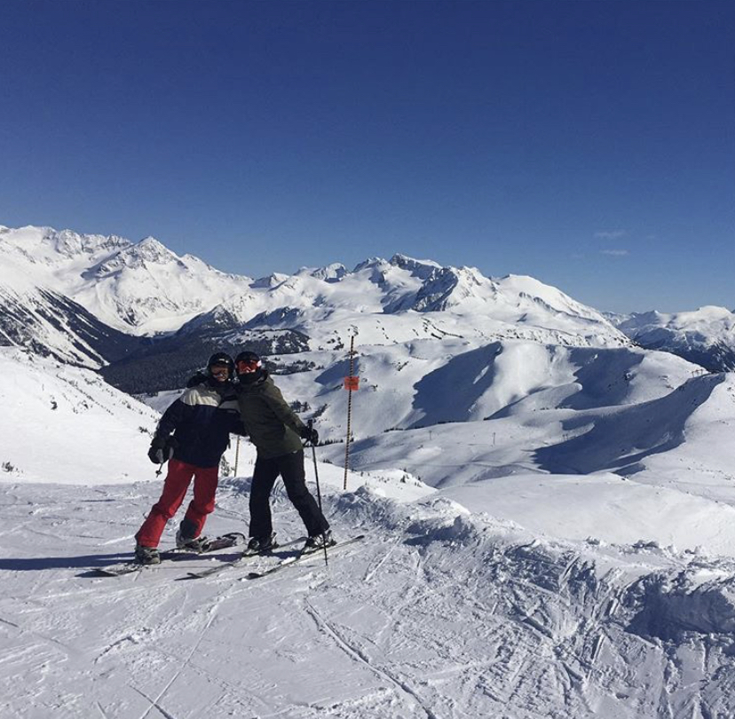

Hello! I'm Sam.
I'm an aspiring software developer based in Seattle, WA. Previously, I have:
- worked as an educator of middle school students, high school students, college students, and adults, in the United States and China
- done hands-on biology research, designing and executing molecular biology experiments investigating the HIV immune response, stem cell development, lung cancer tumorigenesis, and DNA structure
- used a broad range of technical tools - including Python, R, and Bash - to analyze extremely large bioinformatics data sets, create publication-quality data figures, and communicate scientific results in journal articles and conferences presentations
Through this diverse set of professional experiences, I have develped great skills in problem-solving, troubleshooting, team collaboration, and communicating complex topics. I will apply all of these skills, along with a rapidly-developing programming ability, to any technical challenges I face as a software developer, making me an invaluable member of your team.
About me
I earned my PhD in molecular and cellular biology from the University of Washington, in a lab located at Seattle's Fred Hutch Cancer Research Center. While conducting my PhD research, I used a lot of Python, Bash, and R, and found that I loved programming.
In particular, I found it immensely gratifying to use R to create beautiful, publication-quality figures that looked just how I wanted; or to write Python scripts that could efficiently analyze huge, genome-wide data sets; or to create Bash scripts that could transform three hours of painstaking, repetitive typing at the command-line into a simple process of "run one script, go have lunch, and come back to folders full of neatly analyzed data"! Based largely on that experience, I am now extremely excited to be pursuing a career in software development.
Outside of my passions for programming, science, and teaching, I love to spend as much time as possible in the outdoors, in particular:
rock climbing
backpacking

snowboarding
If you're interested, please take a look at:
Projects
I have worked on the following projects:
- Simple Personal Portfolio #1
- Simple Personal Portfolio #2
Contact me
Feel free to get in touch with me via...